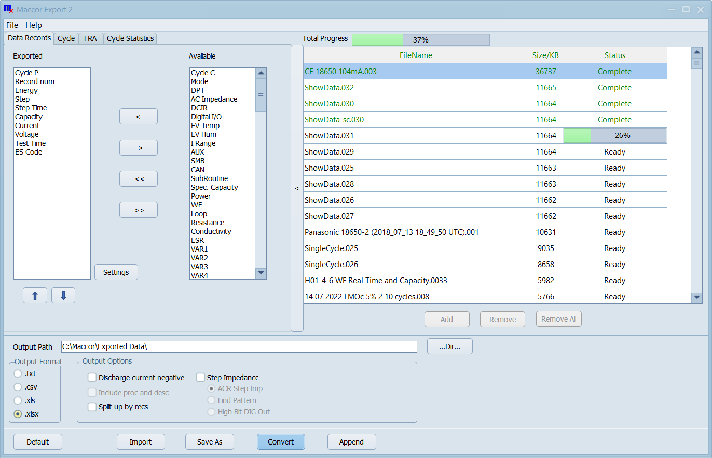
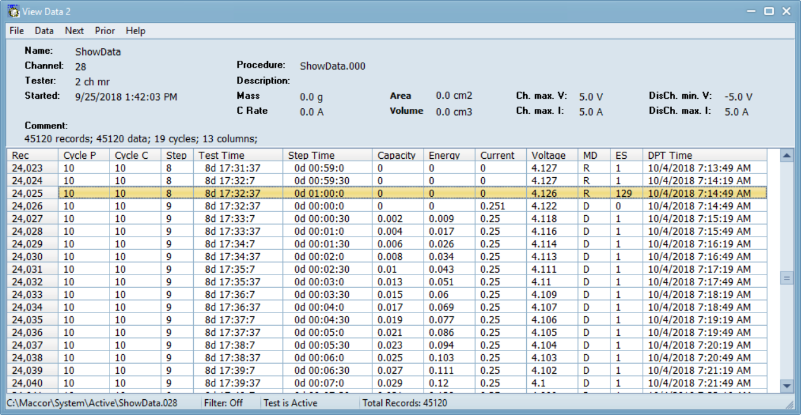

Data Export & View Data
Two tools for getting data out of the Maccor system and into your workflow. Data Export converts raw binary files to ASCII, Excel, or CSV with full field control. View Data provides a live, searchable, record-by-record table of any active or archived test — during the test or after.
From Binary to Spreadsheet in Seconds
Complete control over field selection, file format, and output structure — plus a live tabular inspector for deep per-record analysis.
Export Configuration Panel — Field Selector & Format Options

View Data — Live Tabular Record Inspector

Binary to ASCII, Excel, or CSV
Data Export converts Maccor's raw binary .DAT files to human-readable formats with complete control over content and structure. Key capabilities:
- Format output: Tab-separated ASCII (.txt), Excel workbook (.xlsx or .xls), or comma-separated (.csv)
- Field selection: Choose exactly which columns appear in the output — Cycle, Step, Test Time, Step Time, Voltage, Current, Capacity (Ah), Energy (Wh), auxiliary channels, SMBus fields, CAN channels, loop counters, AC impedance
- Format mask: Per-field numeric format string (e.g. %.4f for 4 decimal places) for precision control
- Split large files: Automatically divide large output into files of a configurable maximum record count
- Summary files: Generate separate end-of-cycle and end-of-step summary files alongside the full record export
- Merge channels: Combine data from multiple channels into a single output file
- Profiles: Save field selection and format configuration as a named profile for one-click re-use
- Cycle data on separate sheet: When exporting to Excel, cycle-level metrics are placed on a dedicated sheet for easier post-processing
Live & Archived Record Inspector
View Data opens any Maccor raw or indexed data file and presents the full record stream in a scrollable, searchable table. It works on both active and archived tests:
- Active tests: Access View Data during a running test to see live records appended in real time; Refresh (Ctrl+R) updates the display to include the latest data
- Archived tests: Open any .DAT or indexed file directly from the Archive folder for post-test record-level analysis
- Filter tool: Filter the record set by Cycle, Step, Report Type, Voltage range, Current range, or any combination — results update instantly
- Next / Prior navigation: Step through data files sequentially by channel number, filename, file age, or start date
- Save as text: Export the current view or filtered subset to a plain-text file
- Column customisation: Reorder columns, set custom headers and units, save display configurations as importable/exportable profiles
- Next/Prior Change: Advanced navigation to jump to the next record where a selected field changes value — useful for large files
Understanding Report Type Codes
Every data record has a Report Type code identifying when it was logged. The most common codes you will encounter in View Data and exported files:
- LR (Log Record): Time- or voltage-triggered data record logged during a step
- EOS (End of Step): Record logged at the moment a step end condition was met
- EOC (End of Cycle): Record logged when the AdvCycle step increments the cycle counter
- CMP (Complete): Record logged when the procedure reaches the End step
- SUS (Suspend): Record logged when a test is manually suspended or a fault occurs
The full list of report codes is documented in the Codes section of the Maccor Help Manual.
Frequently Asked Questions
What is the difference between Data Export and MIMS Server's ASCII output?
MIMS Server generates ASCII automatically and continuously as tests complete — it is hands-off and fires on a schedule. Data Export is a manual, on-demand tool that gives more granular control over field selection, numeric format masks, file splitting, and channel merging. For archival pipelines, use MIMS Server; for custom one-off extracts or post-processing workflows, use Data Export.
Can I view data from a channel that is still running a test?
Yes. Open View Data from the Detailed screen (which pre-selects the current channel), or from the Intermediate/Normal screen after highlighting a channel. The file shows all records written to disk so far. Use Refresh (Ctrl+R) to update the display and show records added since View Data was opened.
Continue in the Suite
- MacTest — Test Execution
- Build Test — Procedure Editor
- MIMS Client - Data Analysis
- MIMS Server — Data Management
- Data Export — Convert Data to ASCII
- Software Suite